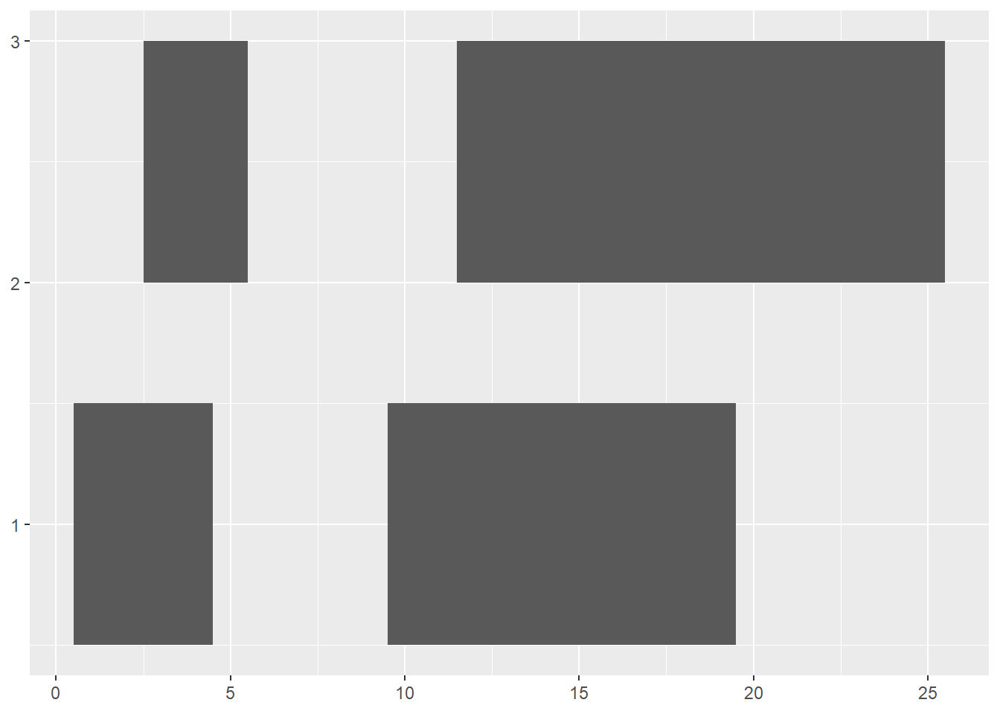
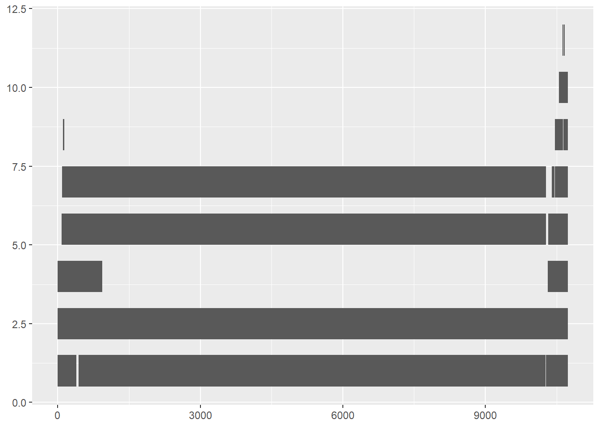
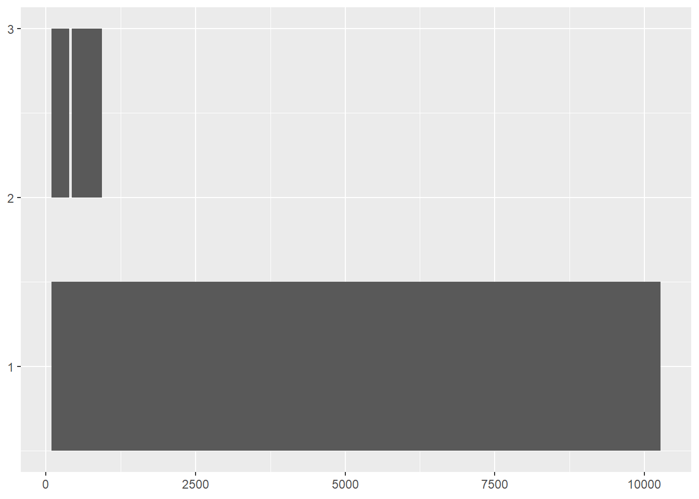

12 Lecture 11 - Sequence analysis in R II
강의 노트 Lecture note
R을 이용한 서열분석 두 번째 시간입니다. 지난시간 NCBI 데이터를 활용하기 위한 reutils에 대한 내용에 이어서 서열 데이터를 다루기 위한 방법들을 배우도록 하겠습니다. 또한 예제에서 나오는 프로그래밍에 익숙해지기 위한 for, if, 그리고 함수를 만드는 법에 대한 내용도 참고하시기 바랍니다.
설치 필요 패키지 (사전 설치 필요). 설치는 다음 패키지들을 CRAN (RStudio 패키지 설치) 또는 Bioconductor 사이트에서 검색 후 지시에 따라 설치하시면 되겠습니다.
- genbankr
- GenomicRanges
- ggbio
- msa
- seqinr
- ape
뎅기바이러스 데이터 다운로드
NC_001477
NC_001474
NC_001475
NC_002640
지난시간에는 reutils 패키지를 이용해 fasta format의 뎅기바이러스 데이터를 다운로드 받았습니다. 이번에는 gb (genbank) format의 데이터를 받아보도록 하겠습니다. genbank 포맷의 데이터는 서열 정보 뿐만 아니라 서열에 위치한 CDS 등 유전자 및 전사된 단백질 정보를 포함하고 있습니다.
다음 코드로 뎅기바이러스 4종에 대한 genbank 포맷의 데이터를 다운로드 할 수 있습니다. 앞서와 같이 4종에 대한 accession 번호를 알고 있다고 가정합니다. 중요한 부분은 efetch 입니다. 앞서 9개의 주요 함수들 중 특정 정보를 찾을때는 esearch를 사용하고 데이터를 다운로드 받을 때는 efetch를 사용한다고 말씀 드렸습니다. 지난시간 보았던 fasta format 다운로드 예제와 같이 efetch의 첫 번째와 두 번째 파라메터는 epost 함수를 사용하여 그 리턴값으로 대신할 수도 있습니다.
library(reutils)
acc <- c("NC_001477", "NC_001474", "NC_001475", "NC_002640")
for(i in 1:length(acc)){
ef <- efetch(acc[i], "nuccore", retmode = "text", rettype = "gb")
write(content(ef),file=paste(acc[i], ".gb", sep=""))
Sys.sleep(1)
cat(i, "/", length(acc), "\n");flush.console()
}12.1 Genbank data parsing
다운로드 받은 파일을 열어 Genbank 포맷의 데이터를 보면 다음과 같이 Locus, Definition 에서부터 시작하여 Feature 까지 다양한 서열에 관한 정보들이 같이 들어 있습니다. 그러나 이러한 정보는 단지 text 파일에 나열된 문자열에 불과합니다. 필요한 정보를 특정 변수에 넣고 이를 필요할 때 언제든 참조해서 사용할 수 있도록 해 두는 것이 좋으며 이러한 작업을 parsing이라고 합니다.
genbank
Genbank 데이터의 파싱은 genbankr이라는 패키지를 사용해서 구현할 수 있습니다. 다음 코드를 이용해서 다운로드받은 첫 번째 뎅기바이러스의 genbank파일을 파싱할 수 있습니다.
library(genbankr)
acc <- c("NC_001477", "NC_001474", "NC_001475", "NC_002640")
acc_files <- paste(acc, ".gb", sep="")
dg_list <- vector("list", length(acc_files))
dg_list[[1]] <- parseGenBank(file = acc_files[1])## Warning in fill_stack_df(resthang$FEATURES[typs == "source"]): Got
## unexpected multi-value field(s) [ type ]. The resulting column(s) will
## be of class CharacterList, rather than vector(s). Please contact the
## maintainer if multi-valuedness is expected/meaningful for the listed
## field(s).str(dg_list[[1]])## List of 11
## $ LOCUS : chr "LOCUS NC_001477 10735 bp ss-RNA linear VRL 03-MAY-2019"
## $ FEATURES :List of 37
## ..$ 1 :'data.frame': 1 obs. of 11 variables:
## .. ..$ seqnames: chr "Dengue virus 1"
## .. ..$ start : int 1
## .. ..$ end : int 10735
## .. ..$ strand : chr "+"
## .. ..$ type : chr "source"
## .. ..$ organism: chr "Dengue virus 1"
## .. ..$ mol_type: chr "genomic RNA"
## .. ..$ db_xref : chr "taxon:11053"
## .. ..$ clone : chr "45AZ5"
## .. ..$ type.1 : chr "1"
## .. ..$ loctype : chr "normal"
## ..$ 2 :'data.frame': 1 obs. of 6 variables:
## .. ..$ seqnames: chr "Dengue virus 1"
## .. ..$ start : int 1
## .. ..$ end : int 94
## .. ..$ strand : chr "+"
## .. ..$ type : chr "5'UTR"
## .. ..$ loctype : chr "normal"
## ..$ 3 :'data.frame': 1 obs. of 7 variables:
## .. ..$ seqnames: chr "Dengue virus 1"
## .. ..$ start : int 2
## .. ..$ end : int 69
## .. ..$ strand : chr "+"
## .. ..$ type : chr "stem_loop"
## .. ..$ note : chr "stem-loop A (SLA)"
## .. ..$ loctype : chr "normal"
## ..$ 4 :'data.frame': 1 obs. of 8 variables:
## .. ..$ seqnames : chr "Dengue virus 1"
## .. ..$ start : int 70
## .. ..$ end : int 78
## .. ..$ strand : chr "+"
## .. ..$ type : chr "regulatory"
## .. ..$ regulatory_class: chr "other"
## .. ..$ note : chr "oligo U track spacer"
## .. ..$ loctype : chr "normal"
## ..$ 5 :'data.frame': 1 obs. of 8 variables:
## .. ..$ seqnames : chr "Dengue virus 1"
## .. ..$ start : int 79
## .. ..$ end : int 94
## .. ..$ strand : chr "+"
## .. ..$ type : chr "regulatory"
## .. ..$ regulatory_class: chr "promoter"
## .. ..$ note : chr "5' upstream AUG region (UAR)"
## .. ..$ loctype : chr "normal"
## ..$ 6 :'data.frame': 1 obs. of 7 variables:
## .. ..$ seqnames: chr "Dengue virus 1"
## .. ..$ start : int 79
## .. ..$ end : int 93
## .. ..$ strand : chr "+"
## .. ..$ type : chr "stem_loop"
## .. ..$ note : chr "stem-loop B (SLB)"
## .. ..$ loctype : chr "normal"
## ..$ 7 :'data.frame': 1 obs. of 10 variables:
## .. ..$ seqnames : chr "Dengue virus 1"
## .. ..$ start : int 95
## .. ..$ end : int 10273
## .. ..$ strand : chr "+"
## .. ..$ type : chr "gene"
## .. ..$ gene : chr "POLY"
## .. ..$ locus_tag : chr "DV1_gp1"
## .. ..$ gene_synonym: chr "polyprotein gene"
## .. ..$ db_xref : chr "GeneID:5075725"
## .. ..$ loctype : chr "normal"
## ..$ 8 :'data.frame': 1 obs. of 14 variables:
## .. ..$ seqnames : chr "Dengue virus 1"
## .. ..$ start : int 95
## .. ..$ end : int 10273
## .. ..$ strand : chr "+"
## .. ..$ type : chr "CDS"
## .. ..$ gene : chr "POLY"
## .. ..$ locus_tag : chr "DV1_gp1"
## .. ..$ gene_synonym: chr "polyprotein gene"
## .. ..$ codon_start : num 1
## .. ..$ product : chr "polyprotein"
## .. ..$ protein_id : chr "NP_059433.1"
## .. ..$ db_xref : chr "GeneID:5075725"
## .. ..$ translation : chr "MNNQRKKTGRPSFNMLKRARNRVSTVSQLAKRFSKGLLSGQGPMKLVMAFIAFLRFLAIPPTAGILARWGSFKKNGAIKVLRGFKKEISNMLNIMNRRKRSVTMLLMLLPT"| __truncated__
## .. ..$ loctype : chr "normal"
## ..$ 9 :'data.frame': 1 obs. of 12 variables:
## .. ..$ seqnames : chr "Dengue virus 1"
## .. ..$ start : int 95
## .. ..$ end : int 436
## .. ..$ strand : chr "+"
## .. ..$ type : chr "mat_peptide"
## .. ..$ gene : chr "POLY"
## .. ..$ locus_tag : chr "DV1_gp1"
## .. ..$ gene_synonym: chr "polyprotein gene"
## .. ..$ product : chr "anchored capsid protein ancC"
## .. ..$ protein_id : chr "NP_722457.2"
## .. ..$ db_xref : chr "VBRC:35735"
## .. ..$ loctype : chr "normal"
## ..$ 10:'data.frame': 1 obs. of 13 variables:
## .. ..$ seqnames : chr "Dengue virus 1"
## .. ..$ start : int 95
## .. ..$ end : int 394
## .. ..$ strand : chr "+"
## .. ..$ type : chr "mat_peptide"
## .. ..$ gene : chr "POLY"
## .. ..$ locus_tag : chr "DV1_gp1"
## .. ..$ gene_synonym: chr "polyprotein gene"
## .. ..$ product : chr "capsid protein C"
## .. ..$ note : chr "added by NCBI staff following more recentannotations of this virus sequence"
## .. ..$ protein_id : chr "NP_722466.2"
## .. ..$ db_xref : chr "VBRC:67793"
## .. ..$ loctype : chr "normal"
## ..$ 11:'data.frame': 1 obs. of 11 variables:
## .. ..$ seqnames : chr "Dengue virus 1"
## .. ..$ start : int 437
## .. ..$ end : int 934
## .. ..$ strand : chr "+"
## .. ..$ type : chr "mat_peptide"
## .. ..$ gene : chr "POLY"
## .. ..$ locus_tag : chr "DV1_gp1"
## .. ..$ gene_synonym: chr "polyprotein gene"
## .. ..$ product : chr "membrane glycoprotein precursor prM"
## .. ..$ protein_id : chr "NP_733807.2"
## .. ..$ loctype : chr "normal"
## ..$ 12:'data.frame': 1 obs. of 12 variables:
## .. ..$ seqnames : chr "Dengue virus 1"
## .. ..$ start : int 437
## .. ..$ end : int 709
## .. ..$ strand : chr "+"
## .. ..$ type : chr "mat_peptide"
## .. ..$ gene : chr "POLY"
## .. ..$ locus_tag : chr "DV1_gp1"
## .. ..$ gene_synonym: chr "polyprotein gene"
## .. ..$ product : chr "protein pr"
## .. ..$ note : chr "peptide pr"
## .. ..$ protein_id : chr "YP_009164956.1"
## .. ..$ loctype : chr "normal"
## ..$ 13:'data.frame': 1 obs. of 11 variables:
## .. ..$ seqnames : chr "Dengue virus 1"
## .. ..$ start : int 710
## .. ..$ end : int 934
## .. ..$ strand : chr "+"
## .. ..$ type : chr "mat_peptide"
## .. ..$ gene : chr "POLY"
## .. ..$ locus_tag : chr "DV1_gp1"
## .. ..$ gene_synonym: chr "polyprotein gene"
## .. ..$ product : chr "membrane glycoprotein M"
## .. ..$ protein_id : chr "NP_722459.2"
## .. ..$ loctype : chr "normal"
## ..$ 14:'data.frame': 1 obs. of 11 variables:
## .. ..$ seqnames : chr "Dengue virus 1"
## .. ..$ start : int 935
## .. ..$ end : int 2419
## .. ..$ strand : chr "+"
## .. ..$ type : chr "mat_peptide"
## .. ..$ gene : chr "POLY"
## .. ..$ locus_tag : chr "DV1_gp1"
## .. ..$ gene_synonym: chr "polyprotein gene"
## .. ..$ product : chr "envelope protein E"
## .. ..$ protein_id : chr "NP_722460.2"
## .. ..$ loctype : chr "normal"
## ..$ 15:'data.frame': 1 obs. of 12 variables:
## .. ..$ seqnames : chr "Dengue virus 1"
## .. ..$ start : int 2420
## .. ..$ end : int 3475
## .. ..$ strand : chr "+"
## .. ..$ type : chr "mat_peptide"
## .. ..$ gene : chr "POLY"
## .. ..$ locus_tag : chr "DV1_gp1"
## .. ..$ gene_synonym: chr "polyprotein gene"
## .. ..$ product : chr "nonstructural protein NS1"
## .. ..$ protein_id : chr "NP_722461.1"
## .. ..$ db_xref : chr "VBRC:35739"
## .. ..$ loctype : chr "normal"
## ..$ 16:'data.frame': 1 obs. of 12 variables:
## .. ..$ seqnames : chr "Dengue virus 1"
## .. ..$ start : int 3476
## .. ..$ end : int 4129
## .. ..$ strand : chr "+"
## .. ..$ type : chr "mat_peptide"
## .. ..$ gene : chr "POLY"
## .. ..$ locus_tag : chr "DV1_gp1"
## .. ..$ gene_synonym: chr "polyprotein gene"
## .. ..$ product : chr "nonstructural protein NS2A"
## .. ..$ protein_id : chr "NP_733808.1"
## .. ..$ db_xref : chr "VBRC:35740"
## .. ..$ loctype : chr "normal"
## ..$ 17:'data.frame': 1 obs. of 12 variables:
## .. ..$ seqnames : chr "Dengue virus 1"
## .. ..$ start : int 4130
## .. ..$ end : int 4519
## .. ..$ strand : chr "+"
## .. ..$ type : chr "mat_peptide"
## .. ..$ gene : chr "POLY"
## .. ..$ locus_tag : chr "DV1_gp1"
## .. ..$ gene_synonym: chr "polyprotein gene"
## .. ..$ product : chr "nonstructural protein NS2B"
## .. ..$ protein_id : chr "NP_733809.1"
## .. ..$ db_xref : chr "VBRC:35741"
## .. ..$ loctype : chr "normal"
## ..$ 18:'data.frame': 1 obs. of 12 variables:
## .. ..$ seqnames : chr "Dengue virus 1"
## .. ..$ start : int 4520
## .. ..$ end : int 6376
## .. ..$ strand : chr "+"
## .. ..$ type : chr "mat_peptide"
## .. ..$ gene : chr "POLY"
## .. ..$ locus_tag : chr "DV1_gp1"
## .. ..$ gene_synonym: chr "polyprotein gene"
## .. ..$ product : chr "nonstructural protein NS3"
## .. ..$ protein_id : chr "NP_722463.1"
## .. ..$ db_xref : chr "VBRC:35742"
## .. ..$ loctype : chr "normal"
## ..$ 19:'data.frame': 1 obs. of 12 variables:
## .. ..$ seqnames : chr "Dengue virus 1"
## .. ..$ start : int 6377
## .. ..$ end : int 6757
## .. ..$ strand : chr "+"
## .. ..$ type : chr "mat_peptide"
## .. ..$ gene : chr "POLY"
## .. ..$ locus_tag : chr "DV1_gp1"
## .. ..$ gene_synonym: chr "polyprotein gene"
## .. ..$ product : chr "nonstructural protein NS4A"
## .. ..$ protein_id : chr "NP_733810.1"
## .. ..$ db_xref : chr "VBRC:35743"
## .. ..$ loctype : chr "normal"
## ..$ 20:'data.frame': 1 obs. of 13 variables:
## .. ..$ seqnames : chr "Dengue virus 1"
## .. ..$ start : int 6758
## .. ..$ end : int 6826
## .. ..$ strand : chr "+"
## .. ..$ type : chr "mat_peptide"
## .. ..$ gene : chr "POLY"
## .. ..$ locus_tag : chr "DV1_gp1"
## .. ..$ gene_synonym: chr "polyprotein gene"
## .. ..$ product : chr "protein 2K"
## .. ..$ note : chr "added by NCBI staff following more recentannotations of this virus sequence"
## .. ..$ protein_id : chr "NP_722467.1"
## .. ..$ db_xref : chr "VBRC:67794"
## .. ..$ loctype : chr "normal"
## ..$ 21:'data.frame': 1 obs. of 12 variables:
## .. ..$ seqnames : chr "Dengue virus 1"
## .. ..$ start : int 6827
## .. ..$ end : int 7573
## .. ..$ strand : chr "+"
## .. ..$ type : chr "mat_peptide"
## .. ..$ gene : chr "POLY"
## .. ..$ locus_tag : chr "DV1_gp1"
## .. ..$ gene_synonym: chr "polyprotein gene"
## .. ..$ product : chr "nonstructural protein NS4B"
## .. ..$ protein_id : chr "NP_733811.1"
## .. ..$ db_xref : chr "VBRC:35744"
## .. ..$ loctype : chr "normal"
## ..$ 22:'data.frame': 1 obs. of 12 variables:
## .. ..$ seqnames : chr "Dengue virus 1"
## .. ..$ start : int 7574
## .. ..$ end : int 10270
## .. ..$ strand : chr "+"
## .. ..$ type : chr "mat_peptide"
## .. ..$ gene : chr "POLY"
## .. ..$ locus_tag : chr "DV1_gp1"
## .. ..$ gene_synonym: chr "polyprotein gene"
## .. ..$ product : chr "RNA-dependent RNA polymerase NS5"
## .. ..$ protein_id : chr "NP_722465.1"
## .. ..$ db_xref : chr "VBRC:35745"
## .. ..$ loctype : chr "normal"
## ..$ 23:'data.frame': 1 obs. of 7 variables:
## .. ..$ seqnames: chr "Dengue virus 1"
## .. ..$ start : int 114
## .. ..$ end : int 130
## .. ..$ strand : chr "+"
## .. ..$ type : chr "stem_loop"
## .. ..$ note : chr "capsid region hairpin (cHP)"
## .. ..$ loctype : chr "normal"
## ..$ 24:'data.frame': 1 obs. of 8 variables:
## .. ..$ seqnames : chr "Dengue virus 1"
## .. ..$ start : int 132
## .. ..$ end : int 142
## .. ..$ strand : chr "+"
## .. ..$ type : chr "regulatory"
## .. ..$ regulatory_class: chr "other"
## .. ..$ note : chr "5' conserved sequence (CS); also called cyclizationsequence"
## .. ..$ loctype : chr "normal"
## ..$ 25:'data.frame': 1 obs. of 6 variables:
## .. ..$ seqnames: chr "Dengue virus 1"
## .. ..$ start : int 10274
## .. ..$ end : int 10735
## .. ..$ strand : chr "+"
## .. ..$ type : chr "3'UTR"
## .. ..$ loctype : chr "normal"
## ..$ 26:'data.frame': 1 obs. of 9 variables:
## .. ..$ seqnames : chr "Dengue virus 1"
## .. ..$ start : int 10320
## .. ..$ end : int 10735
## .. ..$ strand : chr "+"
## .. ..$ type : chr "ncRNA"
## .. ..$ ncRNA_class: chr "lncRNA"
## .. ..$ product : chr "sfRNA1"
## .. ..$ note : chr "subgenomic flavivirus RNA"
## .. ..$ loctype : chr "normal"
## ..$ 27:'data.frame': 1 obs. of 7 variables:
## .. ..$ seqnames: chr "Dengue virus 1"
## .. ..$ start : int 10324
## .. ..$ end : int 10389
## .. ..$ strand : chr "+"
## .. ..$ type : chr "stem_loop"
## .. ..$ note : chr "flaviviral nuclease-resistant RNA 1 (fNR1); alsocalled stem-loop 1 or xrRNA1"
## .. ..$ loctype : chr "normal"
## ..$ 28:'data.frame': 1 obs. of 9 variables:
## .. ..$ seqnames : chr "Dengue virus 1"
## .. ..$ start : int 10393
## .. ..$ end : int 10735
## .. ..$ strand : chr "+"
## .. ..$ type : chr "ncRNA"
## .. ..$ ncRNA_class: chr "lncRNA"
## .. ..$ product : chr "sfRNA2"
## .. ..$ note : chr "subgenomic flavivirus RNA"
## .. ..$ loctype : chr "normal"
## ..$ 29:'data.frame': 1 obs. of 7 variables:
## .. ..$ seqnames: chr "Dengue virus 1"
## .. ..$ start : int 10397
## .. ..$ end : int 10458
## .. ..$ strand : chr "+"
## .. ..$ type : chr "stem_loop"
## .. ..$ note : chr "flaviviral nuclease-resistant RNA 2 (fNR2); alsocalled stem-loop 2 or xrRNA2"
## .. ..$ loctype : chr "normal"
## ..$ 30:'data.frame': 1 obs. of 9 variables:
## .. ..$ seqnames : chr "Dengue virus 1"
## .. ..$ start : int 10463
## .. ..$ end : int 10735
## .. ..$ strand : chr "+"
## .. ..$ type : chr "ncRNA"
## .. ..$ ncRNA_class: chr "lncRNA"
## .. ..$ product : chr "sfRNA3"
## .. ..$ note : chr "subgenomic flavivirus RNA"
## .. ..$ loctype : chr "normal"
## ..$ 31:'data.frame': 1 obs. of 7 variables:
## .. ..$ seqnames: chr "Dengue virus 1"
## .. ..$ start : int 10467
## .. ..$ end : int 10549
## .. ..$ strand : chr "+"
## .. ..$ type : chr "stem_loop"
## .. ..$ note : chr "dumbbell 1 (DBI); also called xrRNA3"
## .. ..$ loctype : chr "normal"
## ..$ 32:'data.frame': 1 obs. of 9 variables:
## .. ..$ seqnames : chr "Dengue virus 1"
## .. ..$ start : int 10551
## .. ..$ end : int 10735
## .. ..$ strand : chr "+"
## .. ..$ type : chr "ncRNA"
## .. ..$ ncRNA_class: chr "lncRNA"
## .. ..$ product : chr "sfRNA4"
## .. ..$ note : chr "subgenomic flavivirus RNA"
## .. ..$ loctype : chr "normal"
## ..$ 33:'data.frame': 1 obs. of 7 variables:
## .. ..$ seqnames: chr "Dengue virus 1"
## .. ..$ start : int 10551
## .. ..$ end : int 10633
## .. ..$ strand : chr "+"
## .. ..$ type : chr "stem_loop"
## .. ..$ note : chr "dumbbell 2 (DBII); also called xrRNA4"
## .. ..$ loctype : chr "normal"
## ..$ 34:'data.frame': 1 obs. of 8 variables:
## .. ..$ seqnames : chr "Dengue virus 1"
## .. ..$ start : int 10630
## .. ..$ end : int 10640
## .. ..$ strand : chr "+"
## .. ..$ type : chr "regulatory"
## .. ..$ regulatory_class: chr "other"
## .. ..$ note : chr "3' conserved sequence (CS); also called cyclizationsequence"
## .. ..$ loctype : chr "normal"
## ..$ 35:'data.frame': 1 obs. of 7 variables:
## .. ..$ seqnames: chr "Dengue virus 1"
## .. ..$ start : int 10643
## .. ..$ end : int 10656
## .. ..$ strand : chr "+"
## .. ..$ type : chr "stem_loop"
## .. ..$ note : chr "short hairpin (sHP)"
## .. ..$ loctype : chr "normal"
## ..$ 36:'data.frame': 1 obs. of 8 variables:
## .. ..$ seqnames : chr "Dengue virus 1"
## .. ..$ start : int 10654
## .. ..$ end : int 10670
## .. ..$ strand : chr "+"
## .. ..$ type : chr "regulatory"
## .. ..$ regulatory_class: chr "promoter"
## .. ..$ note : chr "3' upstream AUG region (UAR)"
## .. ..$ loctype : chr "normal"
## ..$ 37:'data.frame': 1 obs. of 7 variables:
## .. ..$ seqnames: chr "Dengue virus 1"
## .. ..$ start : int 10657
## .. ..$ end : int 10735
## .. ..$ strand : chr "+"
## .. ..$ type : chr "stem_loop"
## .. ..$ note : chr "3' stem-loop (3'SL)"
## .. ..$ loctype : chr "normal"
## ..- attr(*, "dim")= int 37
## ..- attr(*, "dimnames")=List of 1
## .. ..$ : chr [1:37] "1" "2" "3" "4" ...
## $ ORIGIN :Formal class 'DNAStringSet' [package "Biostrings"] with 5 slots
## .. ..@ pool :Formal class 'SharedRaw_Pool' [package "XVector"] with 2 slots
## .. .. .. ..@ xp_list :List of 1
## .. .. .. .. ..$ :<externalptr>
## .. .. .. ..@ .link_to_cached_object_list:List of 1
## .. .. .. .. ..$ :<environment: 0x000000001f77c820>
## .. ..@ ranges :Formal class 'GroupedIRanges' [package "XVector"] with 7 slots
## .. .. .. ..@ group : int 1
## .. .. .. ..@ start : int 1
## .. .. .. ..@ width : int 10735
## .. .. .. ..@ NAMES : chr "Dengue virus 1"
## .. .. .. ..@ elementType : chr "ANY"
## .. .. .. ..@ elementMetadata: NULL
## .. .. .. ..@ metadata : list()
## .. ..@ elementType : chr "DNAString"
## .. ..@ elementMetadata: NULL
## .. ..@ metadata : list()
## $ ACCESSION : chr "NC_001477"
## $ COMMENT : NULL
## $ DBLINK : NULL
## $ DEFINITION: chr "Dengue virus 1, complete genome."
## $ KEYWORDS : chr "RefSeq."
## $ REFERENCE : NULL
## $ SOURCE :List of 3
## ..$ source : chr "Dengue virus 1"
## ..$ organism: chr "Dengue virus 1"
## ..$ lineage : chr [1:4] " Viruses" "Riboviria" "Flaviviridae" "Flavivirus."
## $ VERSION : Named chr [1:2] "NC_001477.1" NA
## ..- attr(*, "names")= chr [1:2] "accession.version" "GenInfoID"위 파싱된 파일의 구조를 보면 37개의 feature가 있고 각 feature에 대해서 7 또는 8개의 variable로 이루어진 것을 알 수 있습니다. 즉, dg_list가 4개 길이를 갖는 list형태의 변수이고 4개 각각의 저장된 변수가 다시 또 list 형태의 변수이고 그 안에 여러개의 feature가 data.frame 형식의 변수로 저장이 되어 있는 형태 입니다. 예를 들어 37번째 feature의 start position을 알고 싶을 때 dg_list[[1]]$FEATURES[[37]]$start 이와 같이 실행하면 원하는 값이 출력됩니다.
12.1.1 Exercise 11-1
앞서 파싱 코드는 첫 번째 파일에 대해서만 수행되었습니다. 이를 for문을 이용하여 4개 파일 모두에 대해서 파싱 작업을 수행합니다. 프로그램밍에서 for문의 사용은 R 언어뿐만 아니라 다른 여러 언어에서도 기본이 되는 문법으로 그 사용법은 필수로 숙지하고 있어야 합니다. for 문과 i 인덱스를 사용하는 부분을 특히 참고하시기 바랍니다.
acc <- c("NC_001477", "NC_001474", "NC_001475", "NC_002640")
acc_files <- paste(acc, ".gb", sep="")
dg_list <- vector("list", length(acc_files))
for(i in 1:length(acc)){
dg_list[[i]] <- parseGenBank(file = acc_files[i])
}12.2 IRanges for genome view
앞서 보여드린 바와 같이 genbank 데이터의 내용 중 대부분을 차지하는 정보는 전체 지놈 서열 중 어디서 어디까지가 유전자 또는 coding sequence 이고 그 번역된 정보가 무엇인지 설명하는 정보 입니다. 즉, feature 정보가 genbank 데이터의 대부분을 차지한다고 해도 과언이 아니며 이러한 feature 정보를 보는 것이 곧 지놈을 분석하기 위한 필수 조건이라고 해도 과언이 아닙니다. 따라서 genbank의 feature 정보를 효율적으로 가시화 하기위한 방법들이 다양하게 개발되어 왔으며 R에서는 IRanges와 GenomicRanges 라는 패키지를 사용할 수 있습니다.
12.2.1 Exercise 11-2
지놈 가시화에서 각 구간(Feature)에 해당하는 CDS 는 사각형으로 그리는 것이 보통입니다. 따라서 IRanges 를 사용하기 전에 사각형을 그리는 예제를 수행하면서 feature를 어떻게 표현할 수 있는이 먼저 이해해 보도록 하겠습니다. 사각형은 기본적으로 4개의 좌표가 있으면 그릴 수 있는 도형입니다.
Rect
위와 같은 사각형은 기본 R 그래픽 함수를 이용해서 사각형을 그릴 수 있습니다. plot.new()함수는 빈 켄버스를 그리고 plot.window() 함수는 x, y 축의 범위 등을 지정하며 이 후 rect, axis 등을 이용해서 사각형이나 x, y 축을 그려줍니다.
plot.new()
plot.window(xlim=c(0,2), ylim=c(0,2))
rect(0,0,1,1)
axis(1)
axis(2)
이러한 사각형의 연속된 표현으로 지놈상의 CDS를 표현해 주며 사각형 정보를 담고 있는 변수는 IRanges를 이용해서 만들 수 있습니다. IRanges 함수는 start와 end를 매개변수로 받으며 각각 vector 형으로 vector 길이 만큼의 start, end 짝이 생성되어 하나의 변수에 저장됩니다. 다음 코드를 실행하면서 좀 더 쉽게 이해 하실 수 있습니다.
library(IRanges)
ir <- IRanges(start=c(1,3,12,10), end=c(4,5,25,19))
ir
length(ir)
start(ir)
end(ir)
width(ir)
range(ir)이제 앞서 배운 사각형 그리는 방법을 이용해서 위 IRanges로 만든 각각의 구간을 그려보도록 하겠습니다. 모든 구간은 start 부터 end 까지 주어져 있고 각 구간의 높이를 1로 고정한다면 사각형을 그리기 위한 네 점을 모두 구할 수 있습니다. 한 가지 주의를 요하는 부분은 각 CDS의 구간이 서로 독립적이지 않고 서로 겹쳐져서 나타날 수 있습니다. 이 때 겹치는 부분이 있을 경우 사각형을 한 칸 위로 위치시켜서 그리면 모든 CDS를 명확히 구분되게 그릴 수 있습니다.
ir <- IRanges(start=c(1,3,12,10), end=c(4,5,25,19))
height <- 1
xlim = c(min(start(ir)), max(end(ir)))
bins = disjointBins(ir)
plot.new()
plot.window(xlim, c(0, max(bins) * height))
ybottom = bins * height - height
rect(start(ir), ybottom, end(ir), ybottom + height, col = "blue")
axis(1)
이제 동일한 기능을 기본 그래프 함수가 아닌 ggplot을 이용해서 수행해 보겠습니다. ggplot은 앞에서 배운 것처럼 plot 정보를 저장한 data.frame형 변수를 만들고 aes로 해당 데이터와 필요 파라메터들을 mapping해준 후 적절한 geometry 함수와 stat을 이용해서 그림을 그리게 됩니다. 본 예제에서는 geom_rect라는 geometry 함수를 사용하면 되겠으며 geom_rect 함수의 필요 파라메터는 사각형을 그리기 위해서 필요한 (xmin, xmax, ymin and ymax) 네 가지 값을 전달해주면 됩니다. 즉, aes 함수에서 이 네 개 파라메터에 맞는 데이터를 mapping 해 주면 되며 이를 위해서 data.frame 또한 위 네 개 값을 갖도록 만들어 주면 되겠습니다. 대략적인 코드는 다음과 같습니다.
ir <- IRanges(start=c(1,3,12,10), end=c(4,5,25,19))
height <- 1
bins <- disjointBins(ir)
ybottom <- bins*height - height
df <- data.frame(ybottom = ybottom,
xleft = start(ir),
xright = end(ir),
ytop = ybottom + height)
ggplot(df, aes(xmax = xright, xmin = xleft, ymax = ytop, ymin = ybottom)) +
geom_rect() 
12.2.2 Exercise 11-3
위와 같이 생성한 IRanges 타입 변수의 정보를 그리기 위해서는 1) df 라는 각 사각형의 위치 정보를 갖는 데이터프레임을 생성하고 2) ggplot을 이용해서 적절히 그려주는 (크게) 두 가지 일을 수행해야 합니다. 그런데 새로운 ir 만들 때마다 위 두 가지를 수행하는 코드를 작성하기 보다는 하나의 함수로 만들어서 사용하면 효율을 높일 수 있습니다. 다음 코드에 위 두 가지 일을 수행하는 plotRanges라는 함수를 만들었습니다.
plotRanges <- function(ir, height=1, sep=0.5){
xm <- c(min(start(ir))-sep, max(end(ir))+sep)
bins <- disjointBins(ir)
ybottom <- bins*(sep+height) - height
df <- data.frame(ybottom = ybottom,
xleft = start(ir) - sep,
xright = end(ir) + sep,
ytop = ybottom + height)
ggplot(df, aes(xmax = xright, xmin = xleft, ymax = ytop, ymin = ybottom)) +
geom_rect()
}이제 IRanges 변수를 만든 후 위 함수를 다음과 같이 간단히 사용할 수 있습니다.
ir <- IRanges(start=c(1,3,12,10), end=c(4,5,25,19))
plotRanges(ir)
12.3 Feature view using IRanges and ggplot2
이제 앞서 읽어온 실제 뎅기바이러스 지놈 데이터로부터 feature를 읽고 이를 visualization 하는 실습을 하겠습니다. 먼저 리스트에 저장된 네 개의 뎅기 바이러스 genbank 정보를 하나의 변수 (sel_dg)에 옮기고 각 정보들을 확인해 봅니다. 이 후 for문을 이용해서 모든 feature 들에 대해 start와 end 정보를 읽어 옵니다.
sel_dg <- dg_list[[1]]
#sel_dg$FEATURES[[1]]$type
#sel_dg$FEATURES[[1]]$start
#sel_dg$FEATURES[[1]]$end
#sel_dg$FEATURES[[1]]$strand
#sel_dg$FEATURES[[1]]$product
n <- length(sel_dg$FEATURES)
start.pos <- rep(0, n)
end.pos <- rep(0, n)
for(i in 1:n){
start.pos[i] <- sel_dg$FEATURES[[i]]$start
end.pos[i] <- sel_dg$FEATURES[[i]]$end
}그리고 위 읽어들인 feature들의 정보를 IRanges 함수로 구간별 정보를 갖는 ir 변수를 만들고 앞서 만든 plotRanges()라는 함수를 이용하여 각 구간을 그려 보도록 하겠습니다.
ir <- IRanges(start=start.pos, end=end.pos)
plotRanges(ir)
12.3.1 Exercise 11-4
그런데 위 그림에서는 feature 정보들이 눈에 띄게 들어오지 않습니다. 이는 두 가지 문제가 원인으로 볼 수 있습니다. 하나는 feature들이 같은 색이기 때문에 구분되지 않는 상황과 또 하나는 다양한 type의 feature가 있기 때문에 우리가 보고싶은 feature만 따로 빼내기 전에는 많은 정보들이 혼재되어 보일 수 있다는 점 입니다.
이를 위해 우리는 feature type이 “mat_peptide” (즉, 성숙한 팹타이드?) 만을 골라서 그림을 그려보도록 하겠습니다. 조건문을 실행하기 위해서는 if를 사용할 수 있습니다. 또한 앞서 코드와는 다르게 for문을 반복하면서 vector를 하나씩 늘려가는 방법으로 값을 저장하겠습니다.
sel_dg <- dg_list[[1]]
n <- length(sel_dg$FEATURES)
start_pos <- c()
end_pos <- c()
for(i in 1:n){
if(sel_dg$FEATURES[[i]]$type=="mat_peptide"){
start_pos <- c(start_pos, sel_dg$FEATURES[[i]]$start)
end_pos <- c(end_pos, sel_dg$FEATURES[[i]]$end)
}
}
ir <- IRanges(start=start_pos, end=end_pos)
plotRanges(ir)
우리가 필요한 feature 만을 뽑아서 본 그림 입니다. 그러나 총 feature 의 갯수는 13개인데 여전히 구분이 되지 않고 있습니다. 이는 앞서 언급한 문제점 중 첫번째 문제점 때문에 발생하는 상황입니다. 이를 위해 다음과 같이 임의로 group을 나누어 주고 각 그룹에 대해서 다른 색을 그리도혹 ggplot의 명령을 바꾸어 주면 기대한 것 처럼 각 feature들 구분할 수 있습니다.
ir <- IRanges(start_pos, end_pos)
bins <- disjointBins(ir)
df <- data.frame(ybottom = bins,
xleft = start(ir),
xright = end(ir),
ytop = bins + 1,
group_no = LETTERS[1:length(ir)])
ggplot(df, aes(xmax = xright,
xmin = xleft,
ymax = ytop,
ymin = ybottom,
fill = group_no)) +
geom_rect()
IRanges는 특정 CDS 구간에 대한 범위 정보만을 가지고 있는 데이터 타입입니다. 그러나 해당 위치의 locus 또는 유전자 이름이나 단백질 정보 등 해당 서열에 해당하는 많은 유전학적 정보들이 있을 수 있습니다. GenomicRanges는 IRanges를 포함하여 위 정보들을 모두 다룰 수 있는 패키지 입니다.
다음 시간에는 위 GenomicRanges를 간단히만 설명하고 서열 비교 등에 관한 내용을 학습하도록 하겠습니다.